Vous avez probablement déjà entendu parler de Zapier, la plateforme qui vous permet de connecter vos applications et de créer des automatisations. Mais vous n'avez probablement jamais entendu parler de ceci : les Agents Zapier. Cette nouvelle fonctionnalité au sein de Zapier est l'avenir de l'automatisation des flux de travail. Qu'est-ce qu'un Agent Zapier ? Il vous permet de construire des flux de travail en IA qui gèrent des tâches complexes avec une compréhension contextuelle. Je sais que cela peut sembler compliqué, mais voyez-le plutôt comme un employé, par opposition à des déclencheurs et des flux de travail prédéfinis dans les Zaps.
Interface & Outils : Aucun logiciel, terminal ou graphique affiché.
Contenu textuel & Code : Aucun code source, indicateur technique ou donnée chiffrée.
Action / Démonstration : Le présentateur s'adresse directement à la caméra en parlant.
Dans cette vidéo, je vais vous montrer comment je l'utilise tous les jours pour gagner des heures chaque semaine. Pour les besoins de cette vidéo, je vais vous montrer comment je l'utilise pour générer automatiquement des idées de contenu afin de ne pas avoir à le faire moi-même. Très bien, plongeons dans le vif du sujet. Attendez. Laissez-moi prendre une gorgée de café et attaquons. Bon, alors tout d'abord, ce que je vais faire, c'est que je vais aller dans Zapier et je veux parler rapidement de la différence entre un flux de travail Zap normal et un agent Zapier.
Interface & Outils : Navigateur web affichant la plateforme d'automatisation Zapier.
Contenu textuel & Code : Instructions textuelles pour configurer un agent IA de recherche d'idées de contenu YouTube, interface utilisateur Zapier avec options de création (Zap, Table, Interface, Chatbot, Canvas).
Action / Démonstration : Présentation et configuration d'un agent de recherche automatisé pour générer des idées de contenu vidéo.
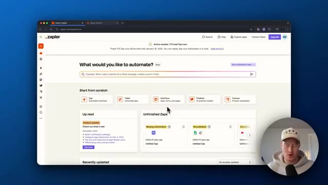
🔍 AgrandirCe sont deux choses complètement différentes. Donc vous avez probablement déjà entendu parler d'un Zap. Si vous venez par ici, laissez-moi vous montrer un exemple rapide. Vous pouvez voir qu'il s'agit d'un assistant de recherche de prospects et, essentiellement, il suit cette progression de type flux de travail statique. Donc essentiellement, nous avons un événement déclencheur, qui est un nouvel événement Google Calendar, et ensuite il envoie une liste d'actions qu'il va accomplir.
Interface & Outils : Navigateur web, interface Zapier.
Contenu textuel & Code : Étapes du flux de travail Zapier : 1. Google Calendar (New Event), 2 & 3. Formatter by Zapier (Text), 4. ChatGPT (Conversation), 5. HubSpot (Create Contact).
Action / Démonstration : Le présentateur montre un exemple concret de flux de travail automatisé (Zap) sur Zapier.
Donc c'est très statique. Ça ne l'est pas, ce n'est pas dynamique. Ça ne peut pas agir de manière autonome, mais vous savez ce qui va se passer à chaque fois, n'est-ce pas ? Comme lorsqu'un nouveau calendrier est ajouté, il va alors, vous savez, formater le texte, formater le texte, l'envoyer à ChatGPT et ensuite créer un nouveau contact. Vous savez, c'est ce qui va se passer. C'est comme ça qu'un Zap fonctionne, ce qui est super. Vous savez, Zapier est une excellente plateforme pour ça. Mais ce donc dont je veux parler, c'est des agents Zapier. Donc si nous entrons dans les agents Zapier, allons voir l'assistant de recherche de prospects ici, qui est un agent que j'ai réellement configuré auparavant. Entrons dans les paramètres pour que je puisse vous montrer à quoi cela ressemble. Et vous verrez que vous avez la possibilité de le nommer, d'ajouter une description,
Interface & Outils : Navigateur web affichant l'interface de Zapier (éditeur de flux de travail et Zapier Agents).
Contenu textuel & Code : Un workflow séquentiel comprenant Google Calendar, Formatter, ChatGPT et HubSpot, suivi d'une interface de chat pour un agent IA.
Action / Démonstration : Présentation visuelle d'un processus automatisé statique suivi de la transition vers une interface d'agent conversationnel autonome.
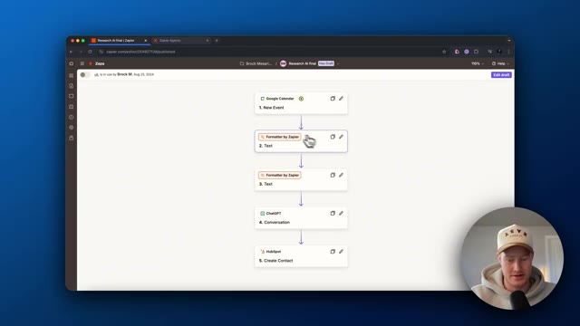
🔍 Agrandir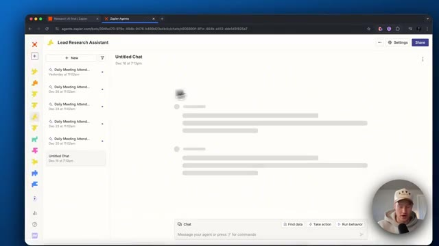
🔍 Agrandirajoutez une source de données, qui est, vous savez, n'importe laquelle de ces sources de données et vous pourriez ajouter des comportements. Il s'agit donc essentiellement de flux de travail que l'agent va automatiser. Donc si je viens ici, allons à l'intérieur de ce comportement. Tout d'abord, vous allez voir que le déclencheur est planifié par Zapier tous les jours, ou vous pourriez changer cela pour à la demande. Il est donc uniquement déclenché lorsque vous discutez réellement avec le robot conversationnel.
Interface & Outils : Interface web de Zapier Agents avec incrustation vidéo du présentateur en bas à droite.
Contenu textuel & Code : Paramètres de configuration d'agent IA, sections "Data sources", "Behaviors", déclencheurs et instructions numérotées pour l'automatisation.
Action / Démonstration : Le présentateur clique sur un comportement pour ouvrir ses détails et examiner les instructions du flux de travail.
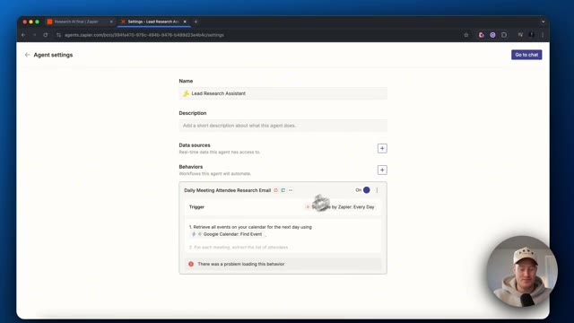
🔍 Agrandir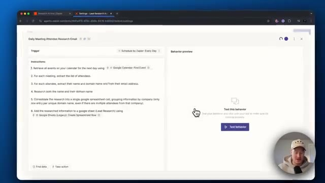
🔍 AgrandirMais ensuite, vous allez voir les instructions. Donc tout d'abord, nous pouvons lui parler et lui dire ce que nous voulons qu'il fasse au lieu de devoir faire les flux de travail à l'intérieur de Zapier. Donc, récupérez tous les événements sur le calendrier du jour suivant en utilisant trouver un événement Google Agenda. C'est donc essentiellement une action ici. Donc ce que vous pourriez faire si vous faites une barre oblique, vous pourriez soit trouver des données en utilisant n'importe laquelle des données que vous utilisez, qu'il s'agisse de feuilles de calcul Google et de Google Docs, ou n'importe quoi de ce genre.
Interface & Outils : Navigateur web affichant l'interface de Zapier (Agents / Central).
Contenu textuel & Code : Instructions numérotées : 1. Récupérer les événements du calendrier, 2. Extraire la liste des participants, 3. Extraire le nom et le domaine, 4. Rechercher les informations, 5. Consolider dans Google Sheets, 6. Ajouter les informations.
Action / Démonstration : Le présentateur explique et commente les instructions textuelles configurées dans l'outil d'automatisation Zapier.
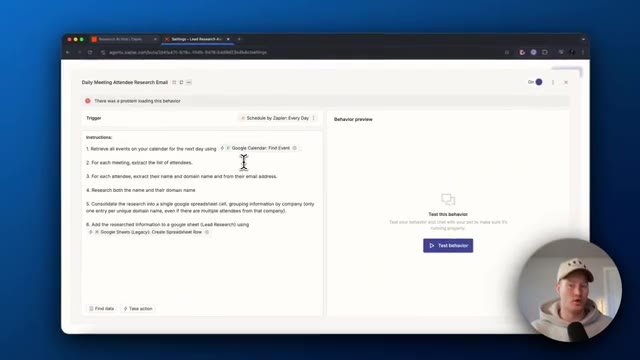
🔍 Agrandir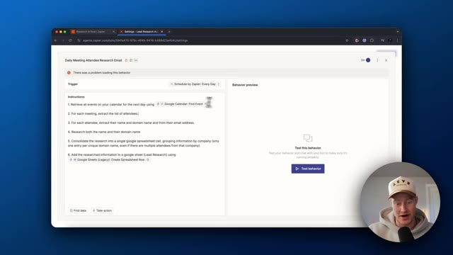
🔍 AgrandirOu vous pouvez lui faire effectuer une action, ce qui est fondamentalement la même chose que dans les Zaps. Mais, vous savez, vous tapez ce que vous voulez. Donc, par exemple, si nous voulons une étape ChatGPT ici, nous pourrions alors cliquer sur ChatGPT. Et puis fondamentalement, c'est un peu la même chose que si nous créions un Zap, vous savez, configurez ceci. Et ensuite, il utilisera cette action ici à l'intérieur de ce flux de travail d'agent que l'agent est en train d'exécuter.
Interface & Outils : Navigateur web affichant l'interface de configuration Zapier Agents.
Contenu textuel & Code : Instructions textuelles détaillées pour un processus automatisé de recherche de contacts de réunion et ajout d'actions d'intégration.
Action / Démonstration : Sélection et ajout d'une étape d'action ChatGPT dans le flux de travail Zapier.
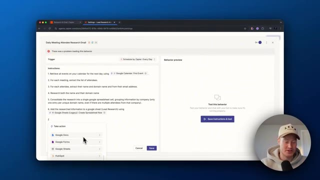
🔍 Agrandir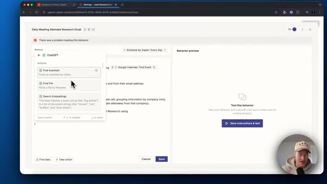
🔍 AgrandirContinuons donc. Pour chaque réunion, extrayez la liste des participants. Pour chaque participant, extrayez son nom et son nom de domaine à partir de son adresse e-mail. Faites des recherches sur le nom et sur son nom de domaine. Consolidez les recherches dans une seule cellule de feuille de calcul Google. En regroupant les informations par entreprise uniquement. Ajoutez les informations recherchées dans la feuille de calcul Google appelée lead research en utilisant à nouveau cette action.
Interface & Outils : Navigateur web affichant l'interface de Zapier Central / Agents.
Contenu textuel & Code : Instructions textuelles détaillées pour l'agent IA (extraction d'événements Google Calendar, récupération des participants, analyse des e-mails et consolidation dans Google Sheets).
Action / Démonstration : Le présentateur explique les différentes étapes de configuration des instructions de l'agent d'automatisation Zapier.
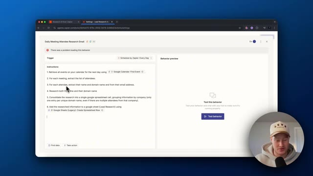
🔍 Agrandir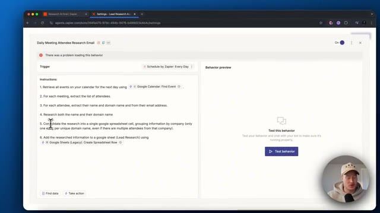
🔍 AgrandirEt pour configurer l'action, tout ce que vous avez à faire, c'est de cliquer ici. Vous devez vous assurer de configurer votre compte, puis de cliquer sur la feuille de calcul que vous voulez réellement alimenter avec ceci. C'est donc ainsi que cela fonctionne. C'est essentiellement vous qui énoncez à voix haute ce que vous voulez construire et cela le construit, ce qui est génial. J'aime cela tellement plus que de construire réellement avec des Zaps. Ensuite, ce que je vais faire, c'est que je vais passer en revue et je vais construire un assistant de recherche de contenu.
Interface & Outils : Navigateur web affichant l'interface de configuration de l'outil d'automatisation Zapier Central / Agents.
Contenu textuel & Code : Paramètres de configuration d'action Google Sheets, instructions numérotées pour l'agent (récupération d'événements Google Calendar, recherche, consolidation dans une feuille de calcul).
Action / Démonstration : Configuration des actions de l'agent Zapier pour interagir avec Google Sheets et automatiser l'alimentation des données.
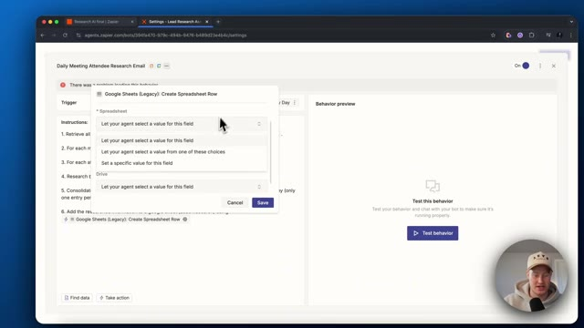
🔍 Agrandir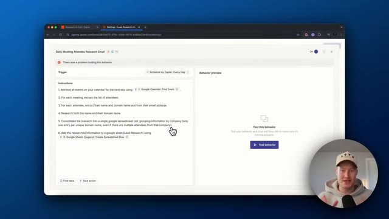
🔍 AgrandirCela va réellement tourner en pilote automatique 24h/24 et 7j/7 et trouver des idées de contenu pour moi. Je n'ai donc pas à le faire moi-même. C'est comme embaucher un employé qui travaille 24h/24 et 7j/7 en pilote automatique. Plongeons donc là-dedans maintenant. Très bien. Maintenant que vous savez exactement ce qu'est un agent Zapier, allons-y et construisons-en un. Rendez-vous donc sur les agents Zapier. Cliquez sur nouveaux agents. Vous pouvez voir qu'il y a certains modèles que vous pouvez utiliser. Cependant, je vais simplement créer un agent personnalisé à partir de zéro et donnons-lui un nom. Appelons cela, je vais appeler cela un agent de recherche de contenu. Et en partant de zéro, nous n'avons pas nécessairement besoin d'ajouter de sources de données pour l'instant. Nous y reviendrons peut-être. Et maintenant, ce que nous voulons faire, c'est
Interface & Outils : Navigateur web affichant l'interface de Zapier Agents.
Contenu textuel & Code : Paramètres de configuration d'agents IA, noms, déclencheurs et comportements automatisés.
Action / Démonstration : Navigation et configuration des paramètres d'un agent IA sur Zapier.
je veux en fait créer un comportement. C'est donc un peu les flux de travail que nous voulons réellement automatiser. Créons donc un comportement et vous pouvez voir que nous sommes invités à le faire. Nous devons en fait configurer le déclencheur. Alors, une chose que je n'ai pas mentionnée, c'est que vous pouvez réellement sélectionner un événement déclencheur provenant d'une autre application. Disons que vous recevez un e-mail ou quelque chose du genre, alors ce flux de travail serait déclenché. C'est donc plutôt cool aussi. Essentiellement, vous pourriez donc créer un agent de messagerie où chaque fois qu'un nouvel e-mail arrive, il filtre automatiquement s'il est important pour vous. Et si c'est le cas, il vous le rappellera, ou vous pourriez vous envoyer un message Slack ou quelque chose comme ça. C'est un cas d'utilisation plutôt cool. Mais pour celui-ci, je vais l'utiliser pour m'aider à construire
Interface & Outils : Interface web Zapier Central / Zapier AI Agents (`agents.zapier.com`).
Contenu textuel & Code : Panneau de configuration "Untitled behavior", option "Select trigger" avec la liste des applications intégrables (Scheduled, Asana, Gmail, Google Calendar, Google Docs, Google Forms), et section "Behavior preview".
Action / Démonstration : Configuration d'un comportement automatisé (behavior) pour un agent IA en sélectionnant l'événement ou l'application déclencheuse (Trigger).
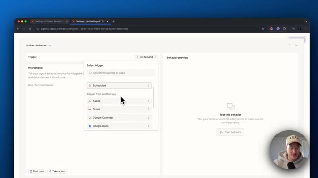
🔍 Agrandir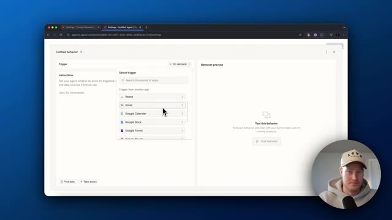
🔍 Agrandircontenu. Donc voici mon premier ensemble d'instructions. Donc chaque jour à 20 heures ou lorsque déclenché à la demande pour rechercher de nouveaux développements dans le domaine de l'IA. Et nous devons venir ici et changeons cela pour planifié. Je vais vous montrer exactement comment le déclencher à la demande plus tard dans cette vidéo. Faisons donc, déclenchons ceci toutes les heures, honnêtement. Donc toutes les heures, il surveillera les dernières actualités en IA, identifiera tout ce qui est intéressant et pourrait être sympa à traiter sur la chaîne. Cela étant dit, abonnez-vous à cette chaîne. Nous traitons de tout ce qui concerne l'IA pour les non-techniciens. Désolé pour la pub.
Interface & Outils : Navigateur web affichant l'interface de configuration de Zapier Agents.
Contenu textuel & Code : Panneau de configuration des déclencheurs comprenant les options "On demand", "Scheduled" et diverses applications intégrées.
Action / Démonstration : Sélection et modification du type de déclencheur pour automatiser une tâche liée à l'intelligence artificielle.
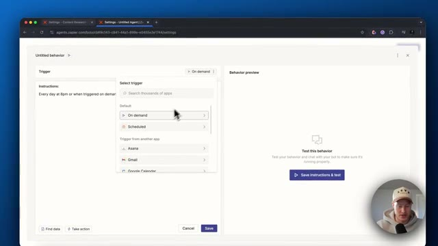
🔍 Agrandir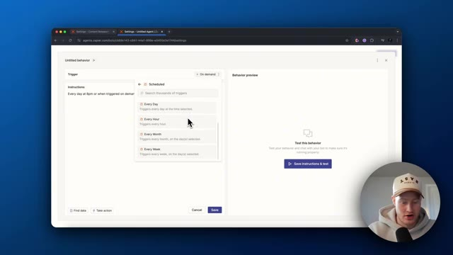
🔍 AgrandirRevenons-en à nos moutons. Donc, décalage horaire, faisons. Très bien. Donc, toutes les heures, au début de l'heure, ce sera déclenché. D'accord. Donc, élabore une liste de bonnes vidéos potentielles basées sur l'actualité tendance pour que je les traite sur ma chaîne YouTube. Et ensuite, donnons-lui un peu de contexte sur ce dont traite ma chaîne YouTube afin qu'elle puisse comprendre qui je suis et qui est mon public cible. C'est parti. Je couvre tout ce qui touche à l'IA, tout ce qui touche à l'IA pour les non-techniciens. Cela peut donc inclure de nouvelles plateformes dont les gens parlent, une nouvelle fonctionnalité d'une entreprise technologique, et cetera.
Interface & Outils : Interface web de Zapier (Agents) et navigateur web.
Contenu textuel & Code : Instructions textuelles pour l'agent : « Every day at 8pm or when triggered on demand, research some new developments in the AI space. Craft a list of potential good videos based on the trending news for me to cover on my YouTube channel... » et déclencheur réglé sur « Schedule by Zapier: Every Hour ».
Action / Démonstration : Saisie et modification des instructions textuelles définissant le comportement et le déclencheur horaire de l'agent IA.
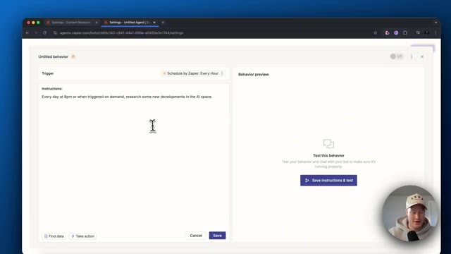
🔍 Agrandir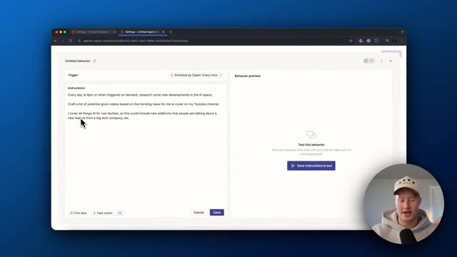
🔍 AgrandirEt ensuite, voici quelques exemples juste afin de donner à notre agent un peu plus de contexte. Ensuite, ce que nous allons faire, c'est que nous allons ajouter l'action. Donc ensuite, ce que je voulais faire, c'est que je veux qu'il prenne cette information et tout ce que je vais faire, c'est que je vais cliquer sur barre oblique, aller pour effectuer une action, et je vais faire en sorte que cela m'envoie réellement un message Slack, donc envoyer un message sur le canal. Tout ce que nous devons faire, nous devons venir ici pour connecter notre compte et notre canal Slack. Vous pourriez soit laisser l'agent sélectionner ceci et remplir automatiquement n'importe quel canal qu'il pense être le mieux adapté, mais laissez-moi plutôt définir une valeur spécifique pour que je sache exactement dans quel canal il va être publié à chaque fois, alors en fait
Interface & Outils : Interface web Zapier (Agents Central)
Contenu textuel & Code : Instructions textuelles définissant le comportement de l'agent IA (recherche d'actualités tech, création d'une liste de sujets vidéo) et intégration Slack.
Action / Démonstration : Configuration des instructions et ajout d'une action d'envoi automatique sur Slack par l'agent IA.
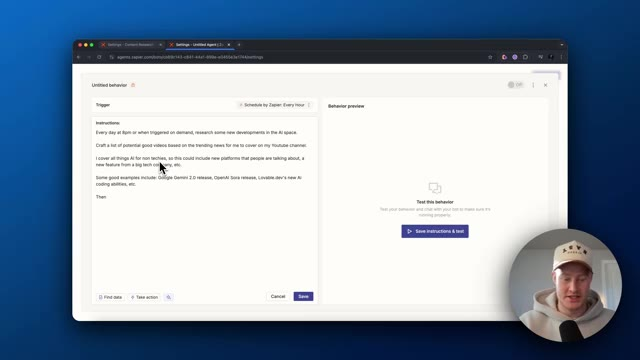
🔍 Agrandir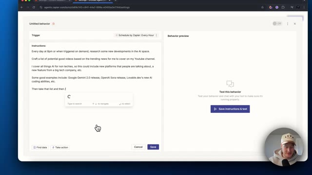
🔍 Agrandir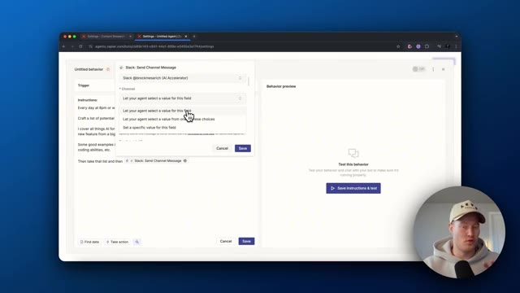
🔍 Agrandirn'ont pas encore de canal configuré mais appelons ça vous savez, ajoutons un canal aléatoire ici et et maintenant sauvegardons cela. Et nous pourrions cliquer sur les suggestions automatiques ici. Voyons donc ce qu'il nous suggère réellement. IA par Zapier, analyser et renvoyer des données. D'accord, commençons par ceci. Je pourrais y ajouter des éléments, mais cela devrait fonctionner maintenant. Ce que nous pourrions faire, c'est aller de l'avant et tester ce comportement.
Interface & Outils : Navigateur web affichant l'interface de configuration des agents Zapier (agents.zapier.com).
Contenu textuel & Code : Éditeur de texte contenant des instructions pour un agent IA de recherche sur l'actualité tech et YouTube, avec des suggestions d'actions automatisées.
Action / Démonstration : Le présentateur configure les instructions d'un agent Zapier, consulte les suggestions automatiques et s'apprête à enregistrer les modifications.
Donc maintenant, il va déclencher ceci et il devrait aller de l'avant et faire des recherches. Le truc génial avec ça, c'est qu'il a la capacité de vraiment parcourir internet. Vous pouvez voir qu'il va effectuer une recherche Google. Il est en train de chercher sur Google. Les gars, c'est tellement génial. Nous sommes littéralement en train de construire un employé IA en utilisant des agents Zapier. D'accord, donc il a continué, a fait des recherches là-dessus. La sortie de Google Gemini 2.0. C'est un bon sujet à couvrir. C'est une super idée de vidéo. Donc évidemment, je veux dire, il sait ce qu'il fait. L'initiative pour les éditeurs d'OpenAI. Intéressant. Les grands services web de Nvidia, une grande idée. Une étude sur l'IA ou la moralité financée par OpenAI. Les innovations en matière d'IA en 2024. Résumer toute l'IA
Interface & Outils : Zapier Central (agents.zapier.com), navigateur web Google Chrome.
Contenu textuel & Code : Workflow "**Daily AI Trends Research Alerts**", déclencheur "Schedule by Zapier: Every Hour", instructions de recherche d'actualités IA, résultats suggérés (Google Gemini 2.0, OpenAI Publisher Initiative, Nvidia Web Services).
Action / Démonstration : Démonstration de l'exécution en temps réel d'un agent IA autonome effectuant des recherches sur Google pour automatiser la veille de contenu.
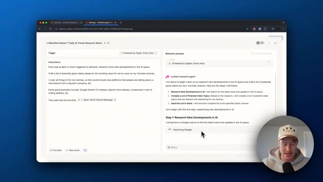
🔍 Agrandir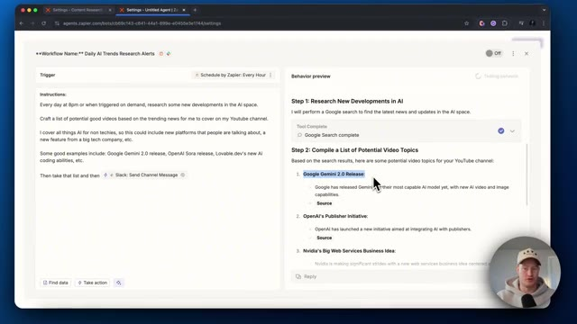
🔍 Agrandirinnovations. D'accord. Donc c'est vraiment une liste plutôt chouette et je pourrais être beaucoup plus précis avec mes consignes dans celle-ci, mais pour l'instant, ça a l'air super et ça a l'air bien. Et pour l'instant, ce que je dois faire, je dois approuver ceci pour la première fois avant que ça n'envoie réellement ce message Slack. Retournons maintenant sur Slack. Très bien. C'est parti. Ça a effectivement publié ceci sur Slack, Google Gemini. Je l'ouvre. OpenAI's Publisher Initiative. C'est super. Donc ça fonctionne correctement. C'est génial. D'accord, donc je voulais en fait aller encore un peu plus loin maintenant, regardez ceci. Donc j'ai ajouté utilise ChatGPT et trouve quelques idées de titres potentielles pour chacune des idées de vidéo que tu me donnes, formate-le comme ceci.
Interface & Outils : Zapier Agents (Zapier Central), Slack, Navigateur Web.
Contenu textuel & Code : Agent IA "Daily AI Trends Research Alerts", consignes de veille technologique (Google Gemini 2.0, OpenAI Sora, Lovable.dev), intégration de modules ChatGPT et Slack.
Action / Démonstration : Configuration, prévisualisation et approbation de l'exécution d'un workflow d'agent autonome de veille stratégique IA.
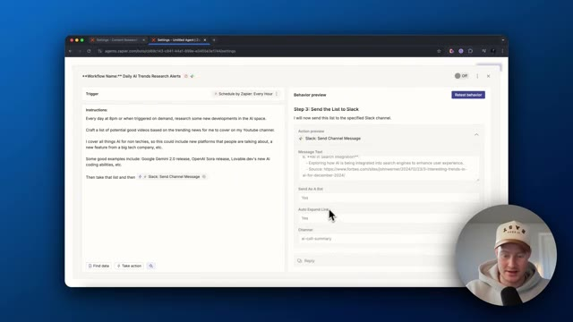
🔍 Agrandir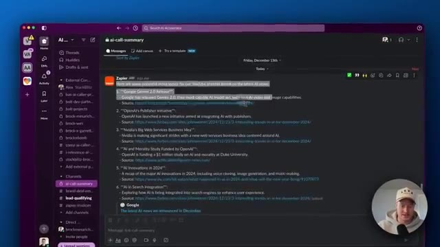
🔍 Agrandir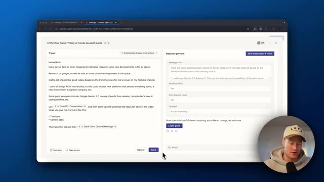
🔍 AgrandirDonc je voulais qu'il me donne l'idée de titre et ensuite l'idée de contenu et ensuite il prendra cette liste et ensuite encore une fois, l'enverra dans un canal Slack. Donc je voulais formater cela un peu différemment. Maintenant, testons ceci et ce sera vraiment cool. Juste, je veux vous montrer ça parce que c'est juste à quel point Zapier Agents est dynamique. Vous pouvez simplement taper ce que vous voulez qu'il fasse et il s'apprendra réellement à le faire. D'accord, super.
Interface & Outils : Navigateur web, interface d'automatisation Zapier Agents.
Contenu textuel & Code : Instructions du workflow pour la recherche de tendances IA, intégration ChatGPT et Slack, aperçu du message.
Action / Démonstration : Configuration et test d'un workflow d'agent conversationnel Zapier avant son déploiement.
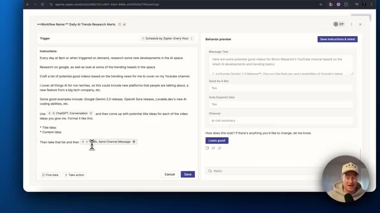
🔍 Agrandir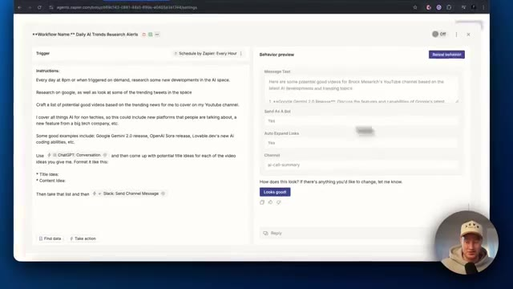
🔍 Agrandir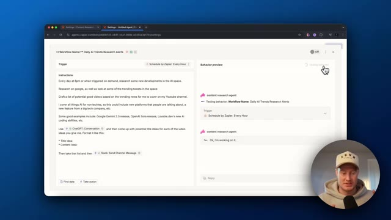
🔍 AgrandirDonc, il a trouvé les, il a fait des recherches sur les idées de contenu et maintenant vous pouvez voir qu'il est à l'étape de trouver réellement les idées de titres. D'accord, donc ça a l'air bien. On dirait que je dois approuver cela pour que cela soit envoyé à ChatGPT. D'accord, donc on dirait qu'il en fait un à la fois et qu'il propose cinq idées de titres différentes pour chacune de ces vidéos.
Interface & Outils : Interface web de Zapier (Agents) avec un panneau de configuration des instructions et une section de prévisualisation.
Contenu textuel & Code : Instructions textuelles du workflow automatisé pour la recherche de tendances IA et la génération d'idées de vidéos YouTube avec ChatGPT et Slack.
Action / Démonstration : Examen des étapes du workflow automatisé et de la génération des idées de titres de vidéos par l'agent IA.
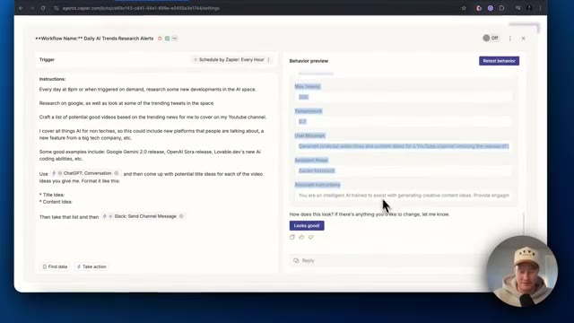
🔍 Agrandir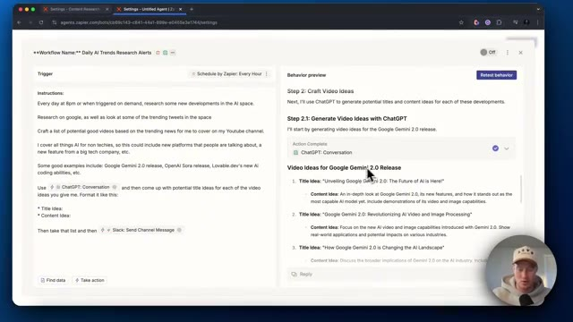
🔍 AgrandirDonc je n'ai pas forcément besoin de faire ça. Donnons-lui un tout petit peu plus de consignes. D'accord, donc j'ai essentiellement dit, je veux que tu le fasses pour chacune des idées de vidéo en une seule consigne, en une seule consigne, au lieu d'avoir à, vous savez, envoyer plusieurs consignes à ChatGPT pour absolument chacune des idées de contenu. Donc enregistre ça, je vais retester ce comportement et j'espère que cela fonctionne correctement.
Interface & Outils : Interface web de Zapier (Agents) avec un panneau de configuration de workflow et une webcam du présentateur en bas à droite.
Contenu textuel & Code : Instructions textuelles pour un agent d'IA nommé "Daily AI Trends Research Alerts", utilisant ChatGPT et Slack, accompagnées de prévisualisations de contenus orientés sur Google Gemini 2.0.
Action / Démonstration : Le présentateur ajuste et complète les instructions textuelles dans l'interface de l'agent pour structurer la génération de prompts uniques pour chaque idée de vidéo.
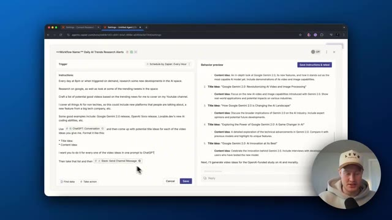
🔍 Agrandir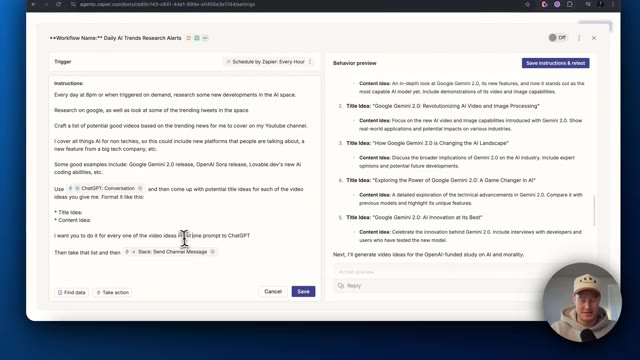
🔍 Agrandir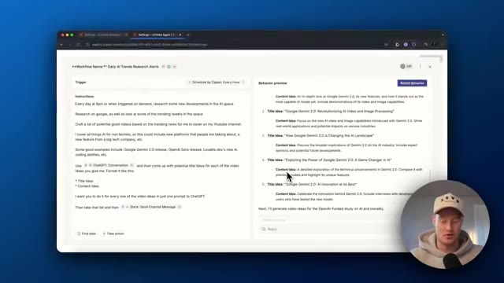
🔍 AgrandirD'accord, donc on dirait qu'il a effectivement fait ça correctement. Donc maintenant, nous avons l'idée de titre pour ceci, puis l'idée de contenu. Et nous avons cela pour les cinq ou, je suppose, les six idées de contenu. Maintenant, c'est l'envoi de cette liste sur Slack. C'est parti. Voici notre message envoyé sur Slack. Nous avons notre titre. Nous avons l'actualité. Nous avons l'idée de titre et nous avons l'idée de contenu.
Interface & Outils : Zapier (éditeur de workflow) et Slack (messagerie d'équipe).
Contenu textuel & Code : Instructions de workflow automatisé, prompts ChatGPT, idées de titres et de contenu sur l'IA (Google Gemini 2.0, OpenAI, etc.), et message final posté sur Slack. [DESC_IMAGE_3] Visualisation du résultat final de l'automatisation avec la réception de la liste des idées de contenu sur un canal Slack.
Action / Démonstration : Explications face caméra et analyse conceptuelle des marchés.
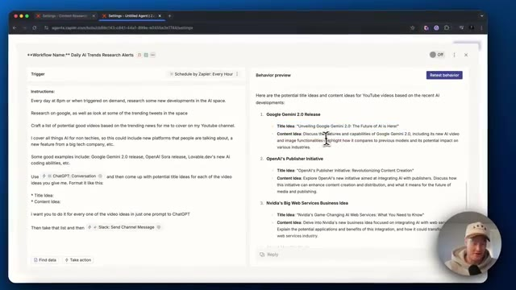
🔍 Agrandir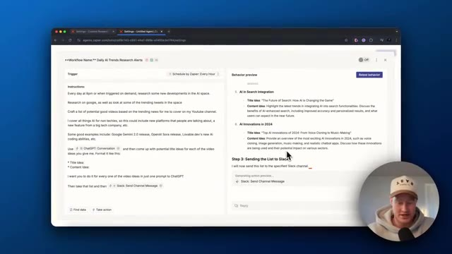
🔍 Agrandir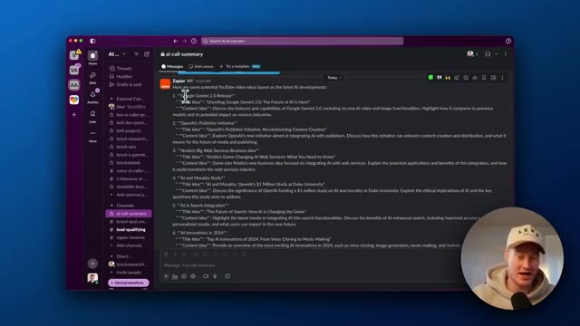
🔍 AgrandirC'est formidable. Nous avons construit tout cela en moins de 10 minutes environ. Nous avons un agent qui, maintenant, recherche littéralement chaque heure des idées de contenu pour nous, puis les envoie dans notre canal Slack. Nous pourrions rendre cela plus dynamique. Je pourrais ajouter ceci à Notion. Je pourrais faire en sorte que cela m'envoie un e-mail avec toutes ces idées de contenu. Ceci n'est qu'un tout petit aperçu de Zapier Agents et je suis tellement impatient d'en parler davantage sur cette chaîne. Je pense que ce sera un cas d'usage vraiment sympa pour beaucoup de gens. Donc, si vous voulez plus de contenu comme celui-ci, assurez-vous de laisser un commentaire, faites-moi savoir que vous avez aimé, laissez un pouce bleu, abonnez-vous à la chaîne. On se voit dans la prochaine vidéo, les amis.
Interface & Outils : Navigateur web affichant l'interface de Zapier Central / Agents.
Contenu textuel & Code : Workflow nommé 'Daily AI Trends Research Alerts' avec des instructions textuelles pour rechercher des actualités sur l'IA et envoyer un message sur Slack.
Action / Démonstration : Présentation de la configuration et des instructions textuelles d'un agent automatisé d'intelligence artificielle.
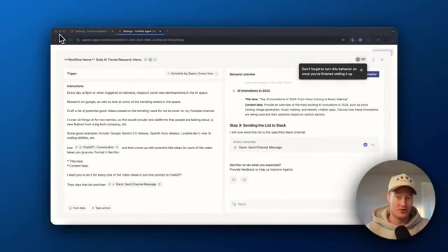
🔍 Agrandir